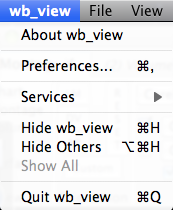

wb_view Menu
The wb_view Menu is exclusive to the Mac version and contains:
About wb_view… (Workbench version, compiling, operating system, and OpenGL information).
Preferences The shortcut for Preferences is Command/Ctrl + ,
Mac-specific options that are available in all applications (Services, Hide wb_view, Hide Others, Show All). The shortcut for Hide wb_view is Command/Ctrl + H; shortcut for Hide Others is alt/option + Command/Ctrl + H.
Quit wb_view (to close the program). The shortcut for Quit wb_view is Command/Ctrl + Q.

In the PC and Linux versions, About wb_view…, Preferences, and Exit (to close the program) options appear in the File menu.